New Year's Eve decor has one job the other holidays do not: it has to work in the dark.
The Christmas tree is still up, the lights are low, and anything that does not shine, reflect or glow disappears by eleven.
So this list leans on metallics, candles, balloons and string lights, and on where to put them so they are still standing at midnight.
Thirty ideas, grouped by what they are made of.

Five Rules for a Party That Still Looks Good at Midnight
- Pick two metals, not three. Gold and black, or silver and white. Three metallics read as a party store.
- Everything that glows goes on a timer or a battery. Nobody is relighting candles at 11:45.
- Helium balloons last twelve hours. Air-filled last days. Fill the arch with air and save helium for the ones that need to float.
- Keep confetti off the floor until the countdown. Scatter it on the table at eight, and it is on the floor by nine.
- Decorate at eye level and above. The table disappears once people stand up, which is most of the night.
Balloons that do the work
1. Foil Numbers Need a Base or They Fall Over
A forty-inch foil number stands up for about ten minutes on its own.
The 2027 here is sitting in a garland of black and gold balloons that hides the weights, with a helium bunch tied off to one side.
Tape a bag of rice to the back of each number and tuck it into the garland. Fill the numbers with air, not helium, so they stay where you put them.
Position it where the photos happen, which is usually by the door, not against the back wall.
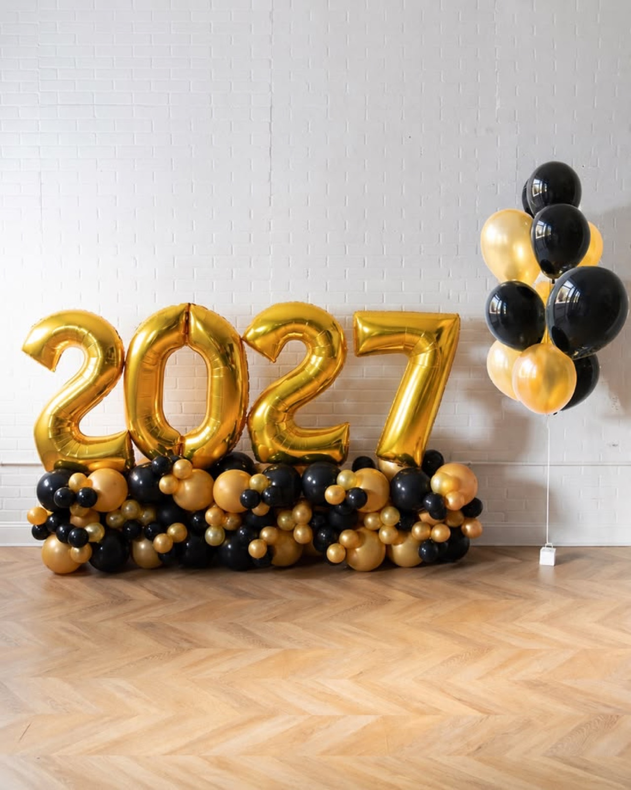
Gold Light-Up Marquee Number
Shop on Amazon2. A Balloon Ceiling Is the Cheapest Big Gesture
Sixty helium balloons with long ribbons cost less than one balloon arch and fill a whole room.
Black and gold ones hang at different heights here, their gold ribbons trailing down to head height over the empty floor.
Cut the ribbons to three lengths rather than one, and inflate them the morning of the party. Helium latex drops by the next day.
Thread a bead onto each ribbon end so it hangs straight instead of curling up.
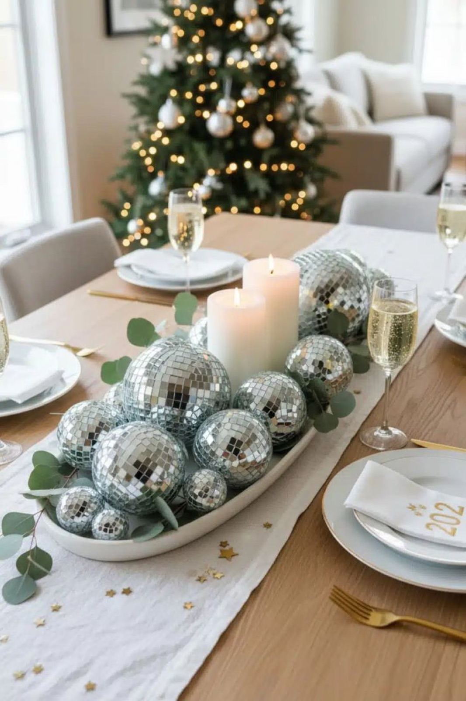
Black and Gold Balloon Garland Arch Kit
Shop on Amazon3. An Arch Over a Doorway Beats an Arch Against a Wall
Everyone walks through a door. Not everyone walks to the wall.
Black, gold, white and marbled balloons sweep over a black door here, with champagne, a tower of coupe glasses and a bowl of gold ornaments on the table below.
Build the arch on a strip of balloon tape, fix it to the frame with removable hooks, and leave the door able to close.
Air-fill it. A doorway arch is the one place a sagging helium balloon is in someone's face.
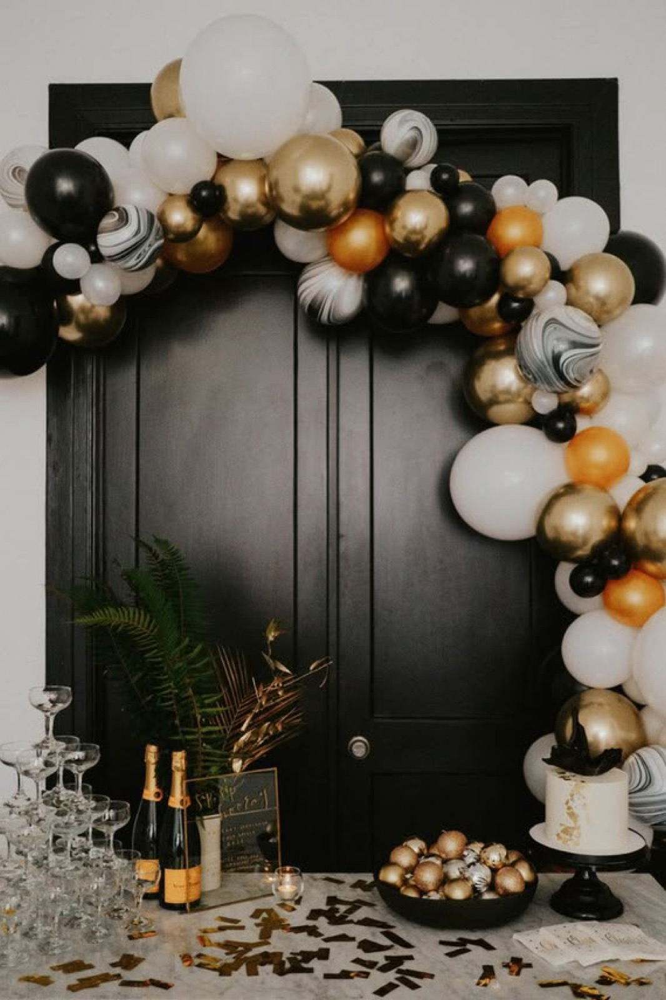
Black and Gold Balloon Garland Arch Kit
Shop on Amazon4. Confetti Balloons Need to Be Rubbed, Not Just Filled
Clear balloons with gold confetti look dull until the confetti sticks to the sides.
The bunch here sits above a table set with brass tapers, a foil Happy New Year banner on the wall and small pies on the plates.
After filling, rub each balloon against a wool jumper for a few seconds. The static holds the confetti to the inside and the whole bunch lights up.
Keep the candles a full arm's length from the ribbons.
Happy New Year Gold Foil Balloon Banner
Shop on Amazon5. Hang Balloons Over the Table Instead of on It
The table is for food. The air above it is free.
Gold and glitter balloons here hang on light strands at three different heights over a dinner table set with candles and apples, with more light strands down the wall behind.
Hang them from a hook in the ceiling or a curtain rail with fishing line, and keep the lowest balloon at least a foot above the tallest candle.
Battery light strands only. You do not want a plug lead crossing a dinner table.
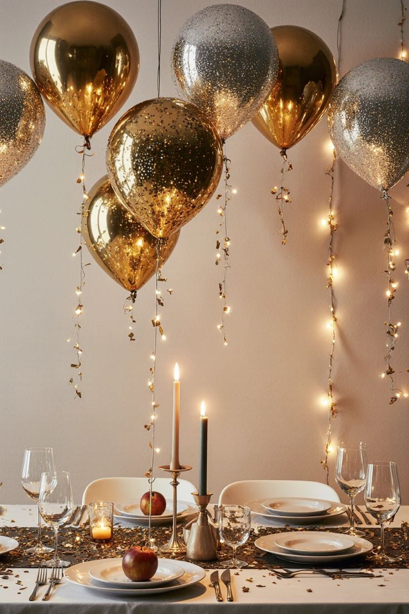
Clear Balloons with Gold Confetti, 12-Inch
Shop on AmazonBackdrops and photo spots
6. A Photo Wall Needs a Floor, Not Just a Wall
Most backdrops stop at the skirting board and the photos show a bare floor.
This one has a gold sequin wall, lit marquee numbers on the floor, a velvet rope in front and black plinths with white roses, so the picture works from top to bottom.
Light the backdrop from the floor with one uplight, as here. Overhead light flattens sequins.
A velvet rope does two things: it keeps the balloons from being knocked and it tells people this is where the photos are.
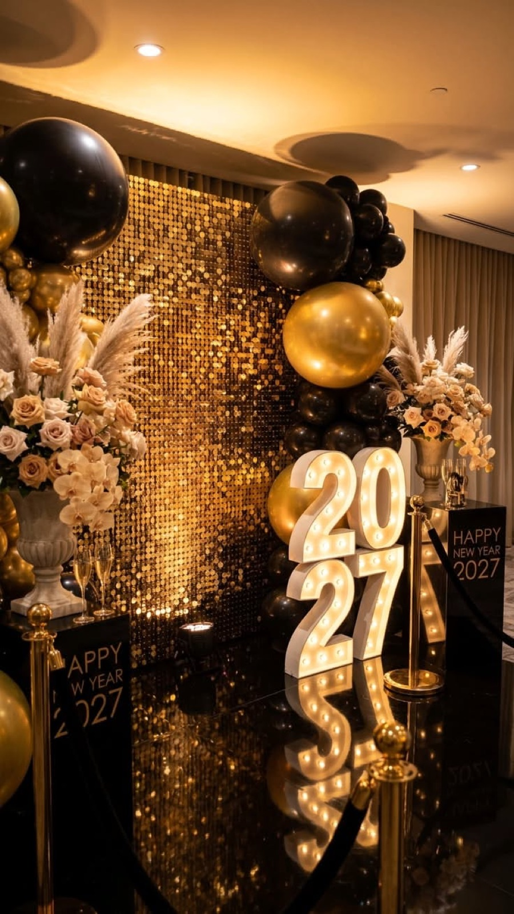
Gold Light-Up Marquee Number
Shop on Amazon7. Props Make a Backdrop Usable
A fringe curtain on its own gets one photo per guest. Props get ten.
Here a gold fringe curtain hangs behind a black-draped table holding top hats, oversized sunglasses, a feather boa and bead necklaces.
Put the props on a table, not in a box. People will not dig, but they will pick up what is in front of them.
Hang the fringe from a curtain rod with removable hooks, and let it touch the floor.
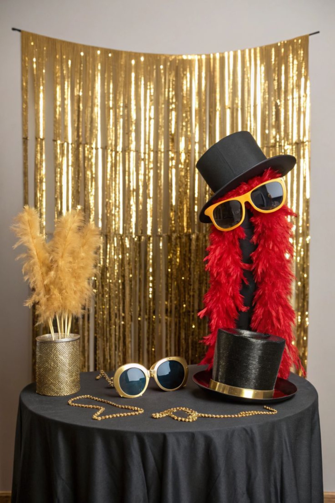
New Year's Eve Photo Booth Props Kit
Shop on Amazon8. Two Balloon Clusters Frame a Backdrop
A tinsel curtain is a wall. Two clusters of balloons turn it into a doorway.
This one has a gold-to-silver fringe curtain with a cluster of gold, black and confetti balloons tied high on each side and a wooden stool for sitting.
Tie each cluster to a weight on the floor and let the balloons rise to shoulder height. Any higher and heads block them in photos.
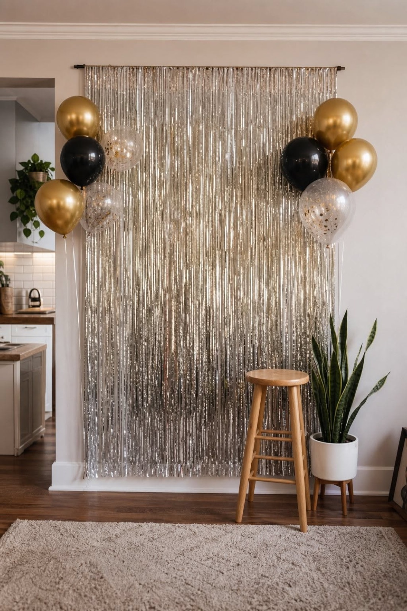
Black and Gold Balloon Garland Arch Kit
Shop on Amazon9. Mirror Streamers Move When Balloons Do Not
Still decor dies in a dark room. Streamers that catch the air do not.
Lengths of silver tinsel hang from the ceiling here over a table of mini disco balls and silver napkins, with silver balloons floating above.
Hang the streamers from the ceiling with removable hooks, not from the light fitting, and cut them to stop a foot above the tallest guest.
A fan on low across the room keeps them turning all night.
Silver Foil Fringe Curtain Backdrop
Shop on Amazon10. A Big Clock Gives the Countdown a Focal Point
At 11:55 everyone looks for a clock. Give them one.
An oversized wall clock hangs on a curtain of fairy lights here, with folded paper stars and string bulbs above and the crowd gathered underneath.
Set the clock to the right time and check it against your phone at ten. A clock that is three minutes out ruins the countdown.
Use a cheap battery clock with a loud tick, not a kitchen clock you need back.
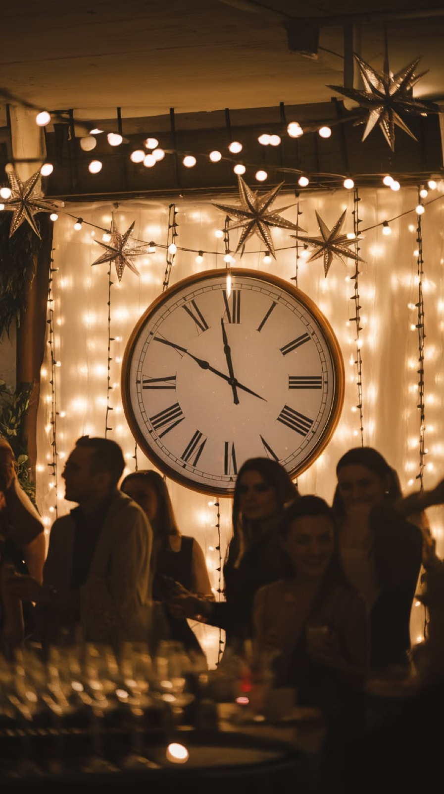
Warm White Fairy String Lights, 33 ft
Shop on Amazon11. Cardboard Numbers Are the Hour-Before Fix
If you have no backdrop and no time, cut the year from cardboard and hang it on twine.
The numbers here are kraft card on jute, with a clock drawn on the wall in black tape and two pocket watches hung either side, over a shelf of candles and lights.
Draw the clock face with painter's tape. It peels off the wall on the second of January without taking the paint.
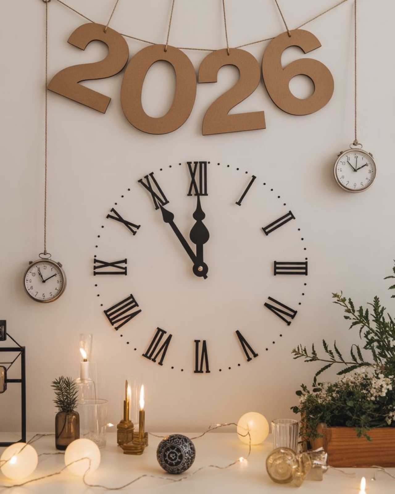
Unscented Tealight Candles, 200-Count
Shop on Amazon36-Inch Oversized Wall Clock
Shop on AmazonThe dinner table
12. Fairy Lights Under the Glassware, Not Around It
String lights on a table should be low and loose so the light comes up through the glasses.
Here a strand of warm fairy lights runs through eucalyptus between gold-rimmed flutes and gold cutlery on a black cloth, with confetti dots around it.
Use a copper-wire strand on a battery pack and tuck the pack under the runner. Keep the strand off the plates so nobody serves themselves a wire.
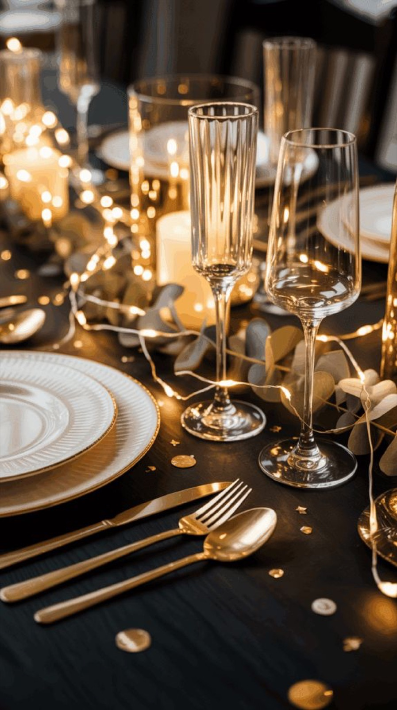
Gold Rim Champagne Flutes, Set of 6
Shop on AmazonWarm White Fairy String Lights, 33 ft
Shop on Amazon13. White Roses and Tealights Is the No-Theme Option
Not every party needs a colour scheme. Some need candlelight and flowers.
This table has white roses in a silver vase, a row of tealights in silver cups, a mercury-glass votive and a beaded napkin ring, with more candles blurred in the room behind.
Tealights burn for four hours. Light them at eight and they are out by midnight, so buy the eight-hour kind or have a second set ready.
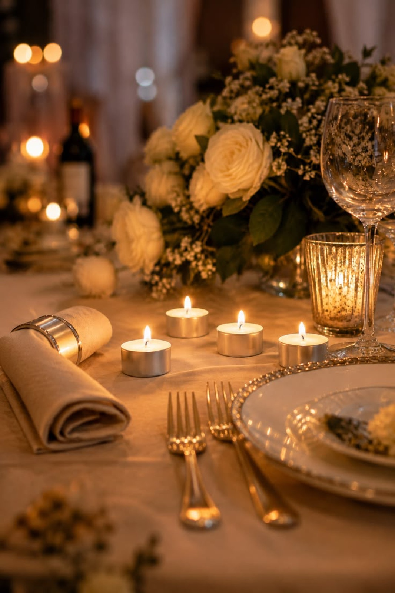
Unscented Tealight Candles, 200-Count
Shop on AmazonGold Rim Champagne Flutes, Set of 6
Shop on Amazon14. Put the Words Where They Light Up
A sign in the dark is just a shape.
Here the words New Year are lit on the wall itself, with a clock beside them, fairy lights above, balloons at the ceiling and a table of candles and flutes in front.
Marquee letters, a lightbox or a string-light sign all work. Printed signs do not, once the main lights go off.
Keep the sign above head height so it is in every photo.
Warm White Fairy String Lights, 33 ft
Shop on AmazonGold Rim Champagne Flutes, Set of 6
Shop on Amazon15. Hang the Decorations and Keep the Table Clear
A table with ten people and a centerpiece is crowded. A table with ten people and a decorated ceiling is not.
Silver balloons and mirror streamers hang from the ceiling here, with mini disco balls scattered on a grey cloth and nothing tall in the way.
Keep the ceiling pieces above the light fitting so they do not cast shadows on the food.
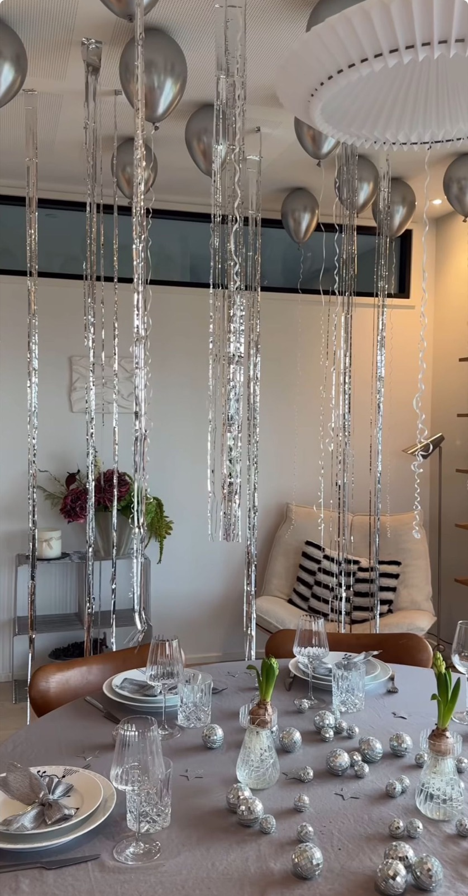
Silver Foil Fringe Curtain Backdrop
Shop on AmazonBlack and Gold Balloon Garland Arch Kit
Shop on Amazon16. Confetti Is the Runner, Not the Garnish
A handful of confetti looks like a mistake. A thick stripe of it looks like a plan.
This runner is a dense band of gold, blue, red and green confetti and stars down the middle of a white cloth, with one candle in the centre and nothing else.
Use paper or foil confetti, not glitter. Glitter never leaves, and it ends up in the food.
Scatter it after the plates are down so none is under the dishes.
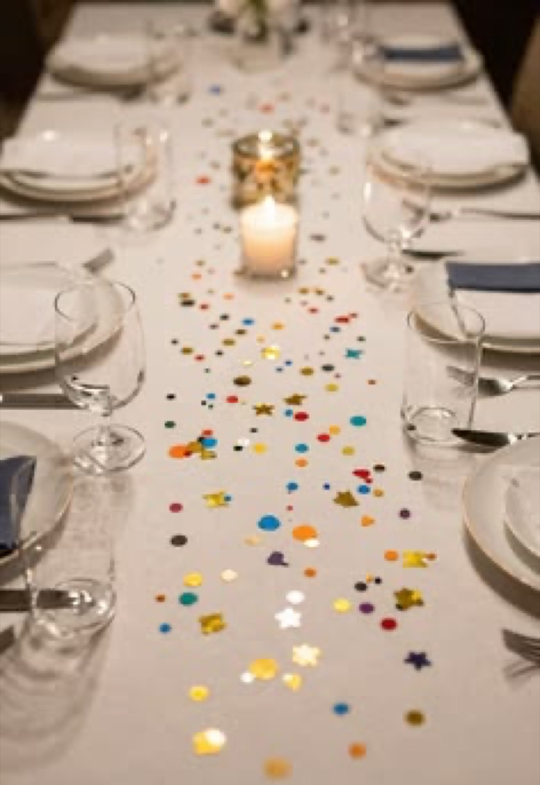
Metallic Gold Table Confetti Scatter
Shop on AmazonUnscented Tealight Candles, 200-Count
Shop on Amazon17. A Sparkler Light Is the Centerpiece for a Flat Table
When there is no room for height, add light that spreads sideways.
An LED sparkler on a stem sits between the champagne bottles here, with glass votives and a pinecone around it and more lights blurred through the window.
Set it on a tray so it cannot tip, and keep real sparklers for outside. The indoor version is the battery one.
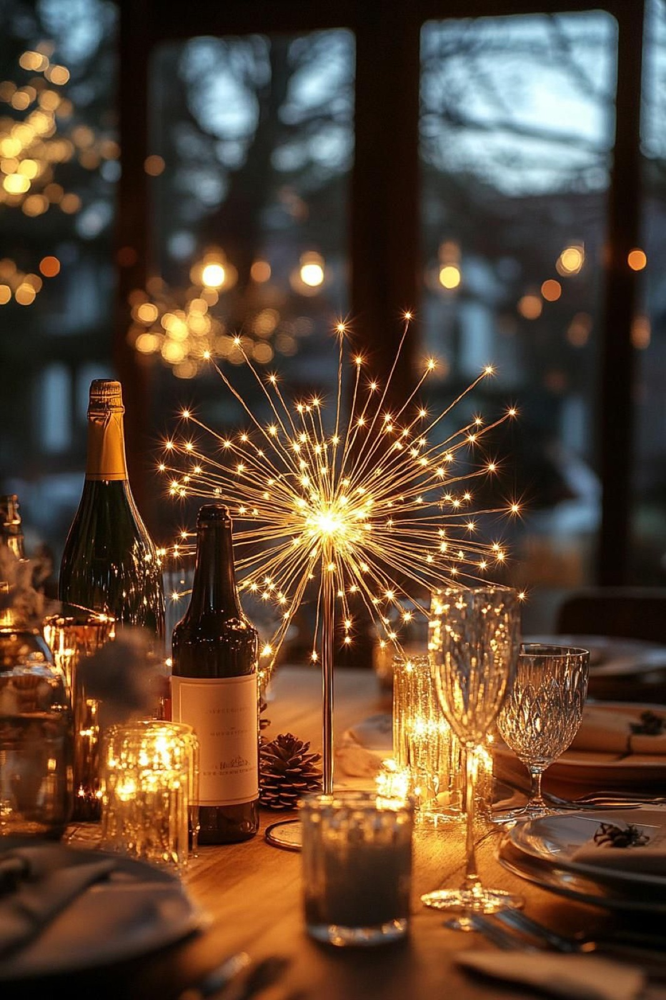
18. Mix One Big Star into a Tray of Round Things
A tray of baubles is pretty. A tray of baubles with one tall star is a composition.
This gold tray holds a mercury-glass lantern, a glitter ball, two gold baubles, a candle in a glass hurricane and a large mirrored star, with a sprig of pine along the edge.
Put the tallest piece at the back and the candle at the front in glass. Candles in the middle of a tray are the ones that get knocked.
Odd numbers. Five pieces, not four.
Unscented Tealight Candles, 200-Count
Shop on Amazon19. Disco Balls Need a Light Source Beside Them
A mirror ball reflects what is near it. In a dark room that is nothing.
Here a dish of mini disco balls sits on a white runner with two pillar candles in the middle and eucalyptus around the edge, with the tree lights behind.
Put the candles in the same dish. The reflections double and the table lights up.
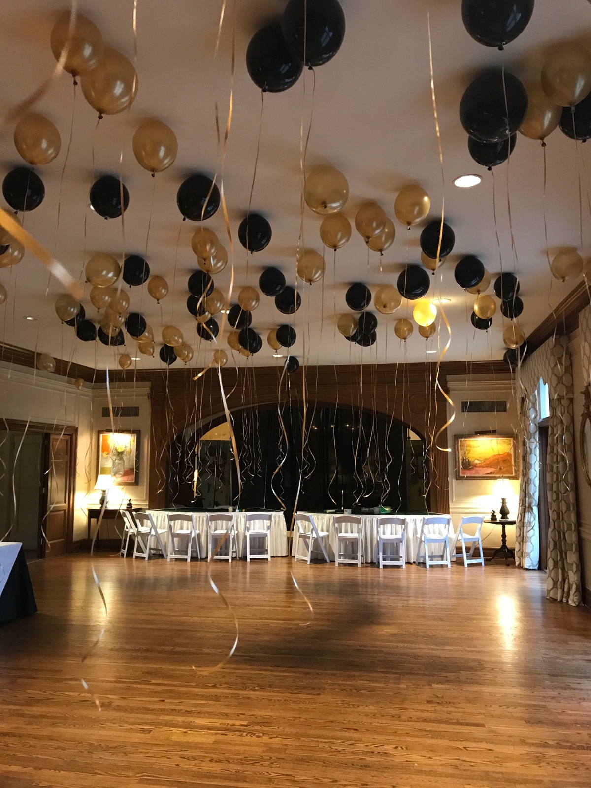
Mini Silver Disco Balls, 54-Piece Set
Shop on AmazonUnscented Tealight Candles, 200-Count
Shop on Amazon20. Fairy Lights in Jars Are Safe Around Kids and Drinks
If the party has children or a lot of champagne, this is the candle alternative.
Five mason jars of different sizes hold copper-wire lights here, standing on a navy cloth with foil stars cut and scattered around them.
Buy strands with the battery pack built into the lid, so there is no wire out of the jar and nothing to knock.
Twenty lights per jar is enough. More and it looks like a lamp.
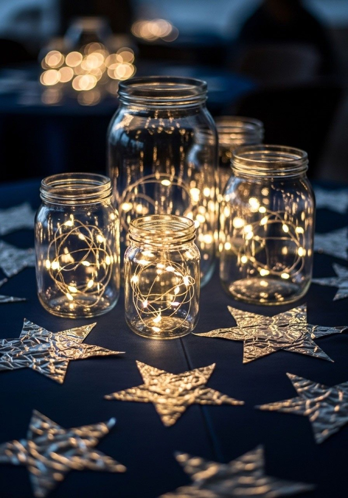
Warm White Fairy String Lights, 33 ft
Shop on AmazonMetallic Gold Table Confetti Scatter
Shop on Amazon21. A Floor Table Is Where Everyone Ends Up Anyway
By eleven, half the guests are on the floor. Set the table there to begin with.
A low wood table with cushions around it sits in front of a lace teepee strung with a Happy New Year banner here, with disco balls and candles on the rug.
Use battery candles on a rug and keep the disco balls away from the cushions so nobody rolls onto one.
A teepee hides a bare corner and gives the youngest guests a place to fall asleep.
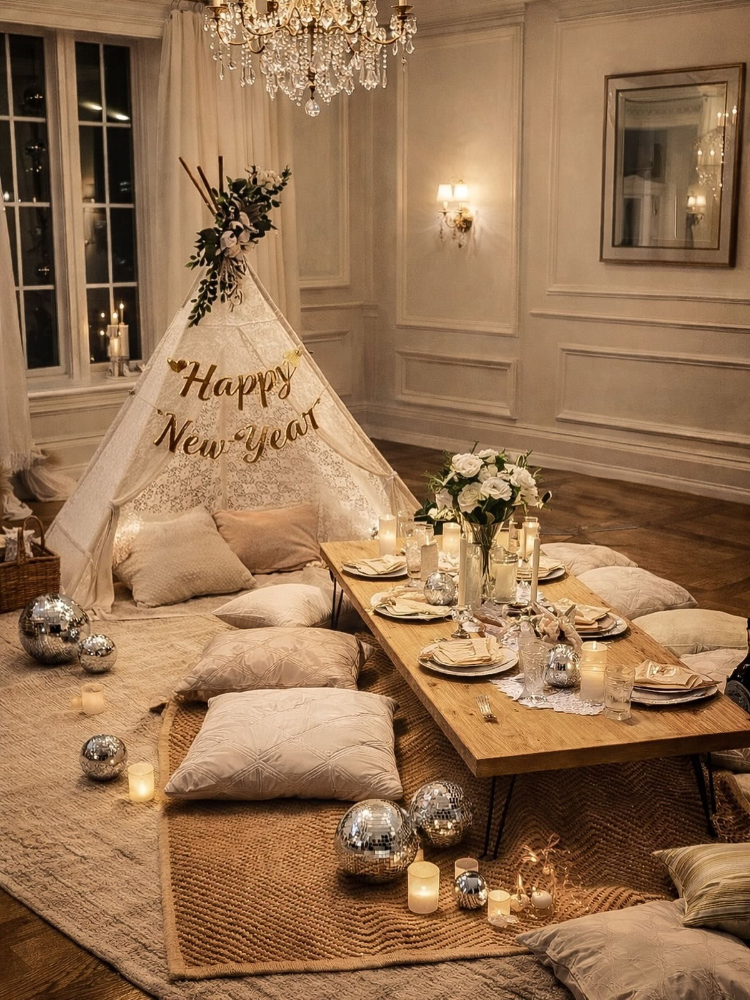
Mini Silver Disco Balls, 54-Piece Set
Shop on AmazonFood and drink
22. A Bar Cart Means Nobody Asks Where the Drinks Are
Put the bottles in one place on wheels and the host gets to leave the kitchen.
This cart has champagne, a decanter and glasses on top, spirits and an ice bucket below, and a banner reading NYE 2027 across the front.
Ice goes on the bottom shelf in a bucket. Melting ice on the top shelf drips on the bottles below it.
Park it where the floor is hard, not on a rug.
Happy New Year Gold Foil Balloon Banner
Shop on AmazonChampagne Ice Bucket Chiller
Shop on Amazon23. Label the Candy Table and Keep the Chocolate Out of Reach
A candy table with no labels means every guest picks things up to look at them.
Here the jars of gold-foil truffles, white chocolate pretzels and gumballs each have a small chalkboard sign, with cupcakes and a tray of cookies on gold satin.
Put the chocolate at the back and the hard candy at the front. Chocolate goes soft under party lights within the hour.
Scoops and tongs for everything. Not everyone washed their hands.
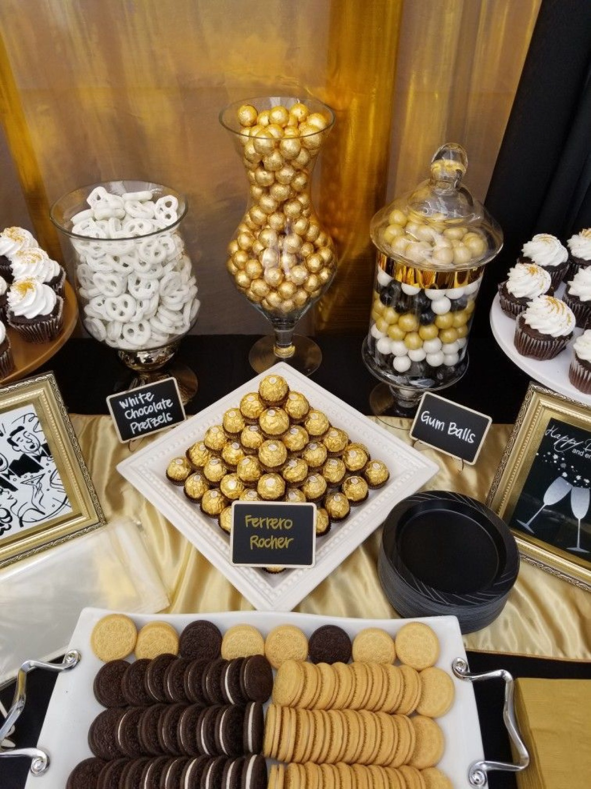
Clear Balloons with Gold Confetti, 12-Inch
Shop on Amazon24. Snacks Go Where the Balloons Are
People gather where the decor is, so that is where the food should be.
This counter has bowls of popcorn and party mix, pretzels, cheese and chocolates under a New Year script sign, with balloons and string lights behind.
Keep the bowls shallow and refill them from the kitchen, so the table never shows an empty one.
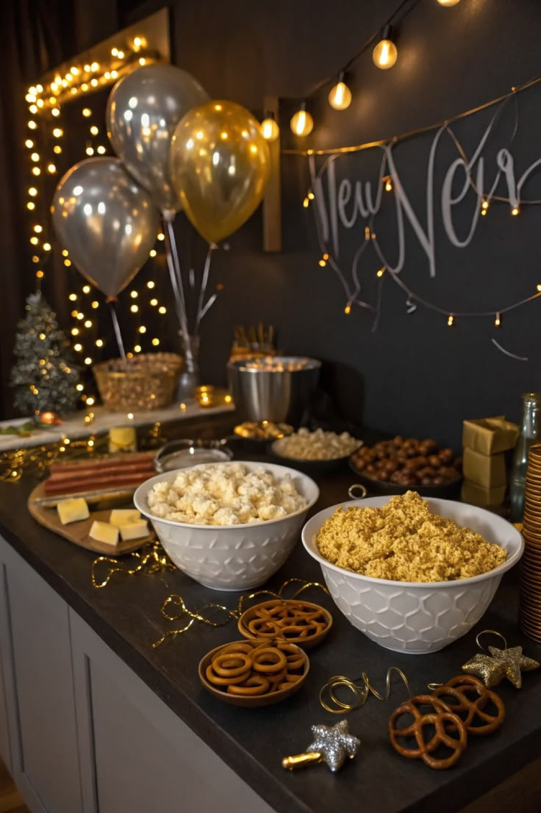
Gold Light-Up Marquee Number
Shop on Amazon25. Gold Leaf Is Edible and Costs Less Than It Looks
A sheet of edible gold leaf is a few dollars, and it turns a cheese board into the centrepiece.
Here figs, blackberries, dark grapes, brie with honey and chocolate truffles sit on a slate board with flakes of gold leaf, next to champagne and an ice bucket.
Apply the gold with a dry brush, never fingers. It sticks to skin and vanishes.
Soft cheese and fruit go back in the fridge after two hours out.
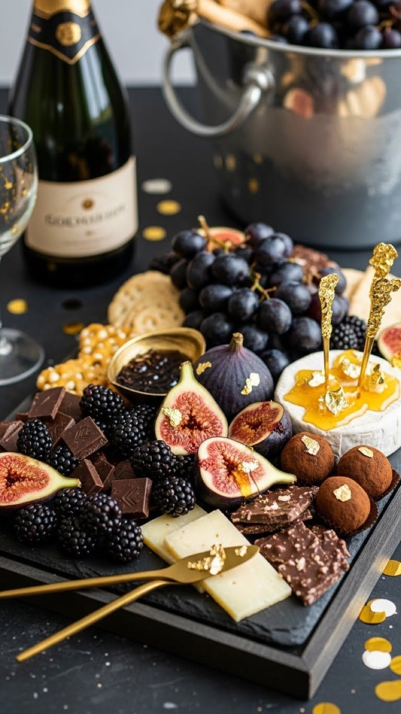
Slate Serving Board and Tool Set
Shop on AmazonChampagne Ice Bucket Chiller
Shop on AmazonLights and the quiet corners
26. String the Ceiling and Turn the Lamps Off
A room lit only from above by string lights is the easiest party lighting there is.
Here strands of warm bulbs cross a white beamed ceiling with clear glass baubles hung from them, over cream sofas and dark windows.
Use warm white, around 2700K, and put the lot on one smart plug so the whole room dims from your phone.
Hook the strands to the beams with removable hooks. Nails in a ceiling are a January regret.
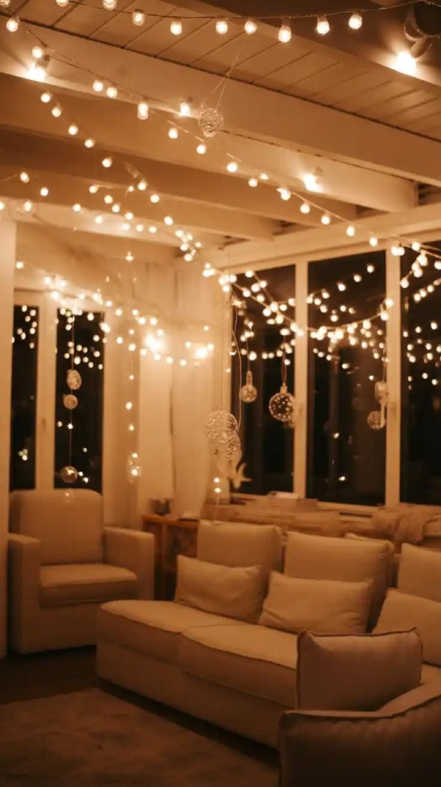
Warm White Fairy String Lights, 33 ft
Shop on AmazonGold Ball Ornaments, 16-Piece Set
Shop on Amazon27. A Balcony Is a Second Room on New Year's Eve
Smokers, phone calls and people who need air all end up outside. Give them something to look at.
Lit snowflakes hang at different heights from a balcony ceiling here, with fairy lights down the railing and potted herbs on a stool.
Solar or battery lights only outdoors. Choose snowflakes rated for outdoor use, and hang them from a hook, not tape, because cold kills tape.
A blanket on the chair outside gets used.
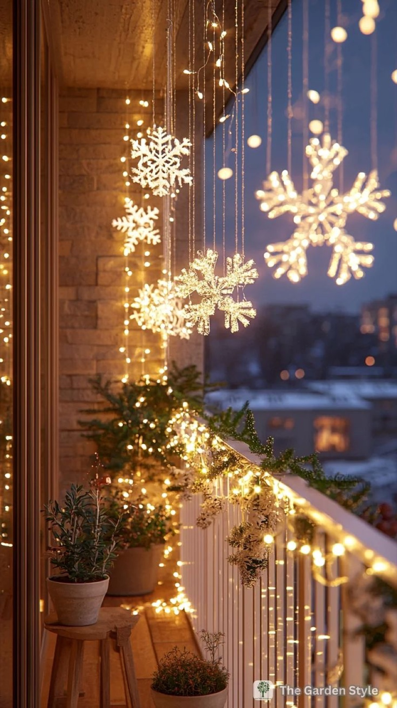
Natural Pinecones, 2 lb Bag
Shop on Amazon28. Paper Stars Are the Decoration You Make the Night Before
An old paperback, a star punch and a needle. That is the garland.
Strands of stars cut from book pages hang in front of a dark window here, at different lengths, from the curtain rail.
Sew the stars onto thread with a running stitch rather than gluing them. They hang straighter and you can reuse the strand.
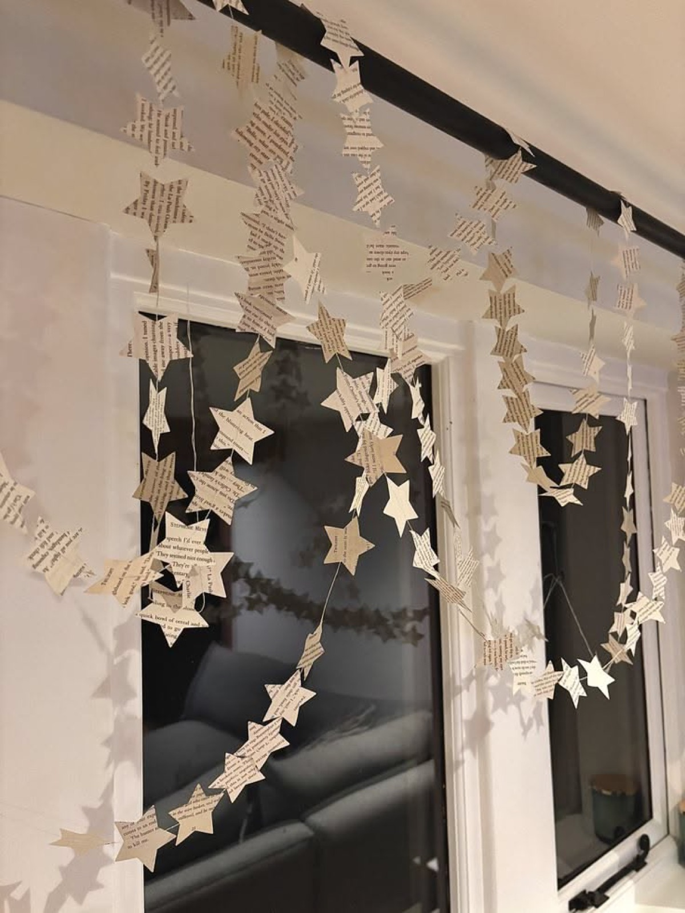
Warm White Fairy String Lights, 33 ft
Shop on Amazon29. A Resolutions Jar Gives the Party Something to Read Next Year
Guests write a resolution, drop it in, and you open the jar at next year's party.
The jar here is a glass canister with a Resolutions label, a gold pen and a stack of cards, on a tray with candles behind.
Put it by the drinks, not the door. People write better after one glass.
Date the jar and put it somewhere you will find it in December.
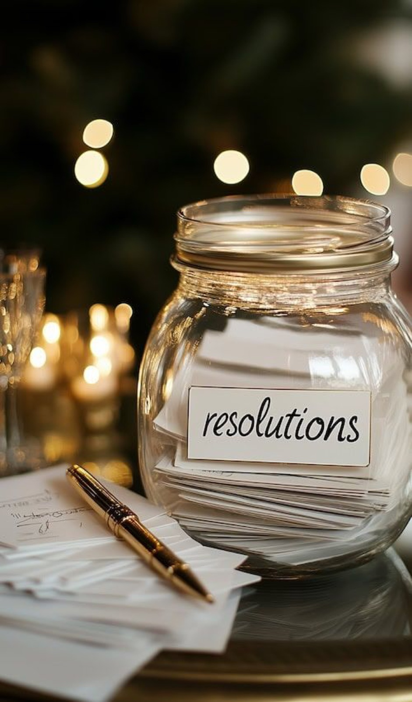

Kraft Gift Tags with Twine, 100-Pack
Shop on Amazon30. A Vision Board Goes Up After the Guests Leave
This one is not for the party. It is for the first morning of the year.
A large board of magazine clippings and printed words hangs beside a bed here, with the Christmas tree still up in the corner.
Use washi tape, not glue, so you can move things around in March when the plans change.
A large poster frame or a cork board both work. Hang it where you see it from the bed.
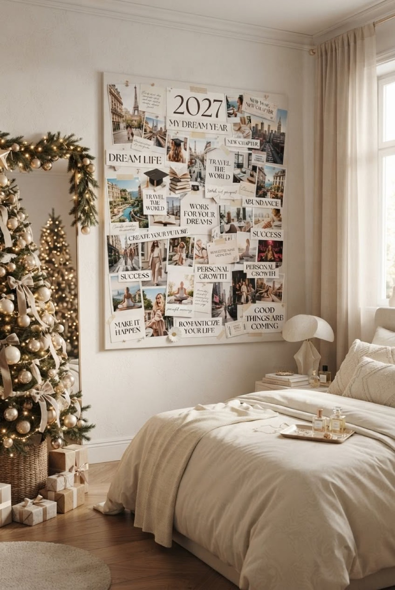
Common Mistakes (and Fixes)
- Helium balloons filled the day before. Latex drops by morning. Fill at noon on the day, or use air and tape.
- Real candles on a table nobody is watching. Battery tapers after ten. Real ones only where someone is sitting.
- Glitter confetti. It is in the carpet until Easter. Paper and foil only.
- Everything at table height. Once people stand, the table vanishes. Hang balloons, lights and signs at head height or higher.
- A photo backdrop with no light on it. One uplight on the floor in front, angled up. Overhead light flattens every sequin.
Where to Start
New Year's Eve is the only party where the room has to look better at midnight than it did at eight.
Two metals, battery lights on a timer, balloons filled with air, and the decor hung high enough to survive a crowd.
Do that, and the photos at 12:01 will look like the ones at 8:01.
Then leave the balloon ceiling up for a week. It is the one decoration that earns it.